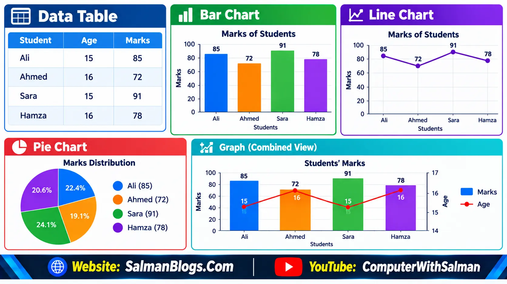

What is Data Science?
Data Science is the process of collecting, organizing, studying, and using data to find useful information and make better decisions.
Simple Example
A school collects students' marks and feedback to find difficult subjects.
- 60% struggle with Mathematics.
- 30% struggle with Science.
- 10% struggle with English.
The school can use this data to provide extra help in Mathematics.
What is Data Gathering?
Data Gathering is the process of collecting information from different sources for a specific purpose.
It is also called data collection.
Simple Example
Suppose a teacher wants to know how students travel to school.
The teacher can ask students:
"How do you come to school?"
Students may give answers such as:
- Bus
- Car
- Bicycle
- Walking
- Motorcycle
The teacher collects all these answers. This process is called data gathering.
What is Data?
Data is a collection of facts, information, or details that can be collected, stored, and used for different purposes.
Data can be in the form of numbers, words, images, sounds, videos, or symbols.
Simple Examples
- A student's name is data.
- A student's age is data.
- A student's marks are data.
- The temperature of a city is data.
- The number of students in a class is data.
- A photo stored on a computer is data.
- A video uploaded to YouTube is data.
Example of Student Data
Suppose a teacher collects the following information:
| Student | Age | Marks |
|---|---|---|
| Ali | 15 | 85 |
| Ahmed | 16 | 72 |
| Sara | 15 | 91 |
The names, ages, and marks in this table are data.
Types of Data
Data is mainly divided into two types:
- Qualitative Data
- Quantitative Data
1. Qualitative Data
Qualitative data describes the qualities, characteristics, or categories of something.
It is generally non-numeric and is often categorical.
A. Non-Numeric Data
Non-numeric data is information that is not represented by numbers. It usually consists of words, descriptions, or names.
Examples:
- Color: Red
- Name: Ali
- Food: Biryani
- Weather: Sunny
- Subject: Computer Science
Example: "The car is black."
Here, black is non-numeric data because it is a word, not a number.
B. Categorical Data
Categorical data puts information into different groups or categories.
Examples:
- Blood group: A, B, AB, O
- Gender: Male, Female
- Transport: Bus, Car, Bicycle, Walking
- Grade: A, B, C, D
- Fruit type: Apple, Banana, Mango
Example: If we ask students how they travel to school:
- Ali → Bus
- Ahmed → Bicycle
- Sara → Car
Here, Bus, Bicycle, and Car are categories, so this is categorical data.
Qualitative Data → Non-Numeric + Categorical
Non-Numeric: Information that is not written as numbers.
Categorical: Information divided into different groups or categories.
2. Quantitative Data
Quantitative data is data that is represented by numbers. It can be measured, counted, compared, and used in mathematical calculations.
Quantitative data can be understood through these characteristics:
1. Numerical
Numerical data is information represented using numbers.
Examples:
- Age = 15 years
- Marks = 85
- Number of students = 40
- Temperature = 30°C
Here, 15, 85, 40, and 30 are numerical data because they are numbers.
Numerical = Data represented by numbers
2. Measurable
Measurable data is data that can be found by measuring something.
We use units such as meters, kilograms, centimeters, seconds, and degrees.
Example: A student's height is 165.5 cm.
Here, height is measurable because we can use a measuring instrument to find its value.
Other examples:
- Weight = 55 kg
- Distance = 10 km
- Temperature = 35°C
- Time = 2.5 hours
Measurable = Data that can be measured
3. Countable
Countable data is data that can be found by counting things.
Example: There are 40 students in a classroom.
We can count the students and get the value 40.
Other examples:
- 25 computers in a lab
- 100 books in a library
- 15 cars in a parking area
- 8 teachers in a department
Countable = Data that can be counted
4. Arithmetical
Arithmetical data is numerical data that can be used in mathematical calculations such as addition, subtraction, multiplication, and division.
Example:
- Mathematics = 80
- English = 70
- Computer Science = 90
We can calculate the total:
80 + 70 + 90 = 240
We can also calculate the average:
240 ÷ 3 = 80
Therefore, the marks are arithmetical data because they can be used in mathematical calculations.
Arithmetical = Data that can be used in mathematical calculations
Organising and Analysing Data
After collecting data, the next steps are to organise and analyse it.
What is Organising Data?
Organising data means arranging collected data in a clear and meaningful way so that it is easy to understand and use.
Example: Suppose a teacher collects the marks of five students:
85, 70, 92, 65, 78
Instead of keeping these numbers randomly, the teacher can arrange them in a data table.
| Student | Marks |
|---|---|
| Ali | 85 |
| Ahmed | 70 |
| Sara | 92 |
| Hamza | 65 |
| Ayesha | 78 |
Now the data is easier to read and understand.
What is Analysing Data?
Analysing data means studying organised data to find patterns, relationships, differences, trends, or useful information.
Example: By analysing the marks above, we can find:
- Sara got the highest marks.
- Hamza got the lowest marks.
- Most students scored above 70.
- The average marks can be calculated.
So, data analysis helps us turn raw data into useful information.
Importance of Organising Data
The importance of organising data can be understood from the following important points:
- Makes data easy to understand
- Makes data easy to read
- Makes data easy to compare
- Helps identify patterns and trends
- Saves time when finding information
- Helps in making better decisions
- Makes data analysis easier
- Reduces confusion and errors
- Makes data easier to store and manage
- Helps present information clearly
- Makes important information easier to find
- Helps in preparing reports and charts
Data Tables
A data table is a way of organising data in rows and columns so that information can be presented clearly and easily understood.
Example of a Data Table
| Student | Age | Marks |
|---|---|---|
| Ali | 15 | 85 |
| Ahmed | 16 | 72 |
| Sara | 15 | 91 |
| Hamza | 16 | 78 |
Charts
A chart is a visual way of presenting data using bars, lines, slices, or other graphical elements. Charts make data easier to understand, compare, and analyse.
Common Types of Charts
- Bar Chart – Used to compare values between different categories.
- Line Chart – Used to show changes or trends over time.
- Pie Chart – Used to show parts or percentages of a whole.
Graphs
A graph is a visual representation of data that helps us understand relationships, patterns, comparisons, and changes in the data.
Graphs usually use axes to display data:
- X-axis: Usually represents categories, time, or another variable.
- Y-axis: Usually represents the value being measured.

Methods and Tools of Data Collection
Data Collection
Data collection is the process of gathering information from different sources for a specific purpose. The collected data can then be organised, analysed, and used to make better decisions.
Example: A school may collect data about students' marks, attendance, study habits, and feedback to understand their performance.
Methods of Data Collection
There are several methods used to collect data:
1. Surveys
A survey is a method of collecting information by asking questions from a group of people. Surveys can be conducted using paper forms, online forms, or other tools.
Example: A school can conduct a survey to find out which subjects students like the most.
Best Practices in Online Survey Design and Administration
- Clear and Specific Questions
- Use Multiple-Choice and Rating Scales
- Keep the Survey Short and Simple
- Ensure Anonymity
- Test the Survey Before Sharing
- Analyse the Survey Results
2. Questionnaires
A questionnaire is a set of written questions used to collect information from people. It may contain multiple-choice, yes/no, or open-ended questions.
Example: A teacher can give students a questionnaire to collect their feedback about online learning.
3. Interviews
An interview is a method of collecting data by asking questions directly to a person or a group of people. Interviews can be conducted face-to-face, by phone, or online.
Example: A company may interview customers to understand their opinions about a new product.
4. Observations
Observation is a method of collecting data by carefully watching and recording people, events, activities, or situations.
Example: A teacher may observe students in the classroom to study their participation and behaviour.
5. Online Data Sources
Online data sources are websites, online databases, digital records, social media platforms, and other internet-based sources from which data can be collected.
Example: A researcher may collect information about weather, population, or technology trends from reliable websites and online databases.
Data Types: Structured and Unstructured Data
Data can also be classified based on how it is organised and stored. Two common types are:
- Structured Data
- Unstructured Data
1. Structured Data
Structured data is data that is organised in a fixed and well-defined format, usually in rows and columns.
It is easy to store, search, sort, and analyse using databases and spreadsheets.
Example
| Student | Age | Marks |
|---|---|---|
| Ali | 15 | 85 |
| Ahmed | 16 | 72 |
| Sara | 15 | 91 |
Here, each piece of information has a specific place in the table.
Examples
- Student records
- Employee records
- Bank transactions
- Product lists
- Sales records
- Customer information
2. Unstructured Data
Unstructured data is data that does not follow a fixed or organised format. It can contain different types of information and is not usually stored in rows and columns.
Examples
- Images and photographs
- Videos
- Audio recordings
- Social media posts
- Emails
- Text documents
- Presentations
Data Visualization
Data visualization is the process of presenting data in a visual form, such as charts, graphs, and diagrams. It makes complex data easier to understand, compare, and analyse.
Example: Instead of looking at a long list of monthly sales numbers, we can use a bar chart or line chart to quickly see which month had the highest sales.
Data Visualization Tools
Several tools can be used to create charts, graphs, and other visual representations of data.
1. MS Excel
Microsoft Excel is a spreadsheet program used to organise, calculate, analyse, and visualize data. It can create different types of charts and graphs.
2. Google Sheets
Google Sheets is an online spreadsheet tool that allows users to store, organise, analyse, and visualize data. It also allows multiple people to work on the same spreadsheet online.
3. Tableau
Tableau is a data visualization tool used to create interactive charts, graphs, dashboards, and reports. It is useful for analysing large amounts of data and presenting it clearly.
4. Microsoft Power BI
Microsoft Power BI is a data analysis and visualization tool used to analyse data and create interactive charts, graphs, reports, dashboards, and maps. It helps users understand data and make better decisions.
Data Preprocessing and Analysis
Data Pre-processing
Data pre-processing is the process of checking, cleaning, and preparing raw data before analysing it. It helps make the data accurate, complete, and suitable for analysis.
Example: If a student marks table contains missing marks, incorrect values, or duplicate records, these problems should be fixed before analysing the data.
Data Pre-processing Techniques
1. Evaluating Data Quality
Data quality means checking whether the collected data is accurate, complete, consistent, and useful for analysis.
2. Identifying Errors, Outliers, and Biases
Errors: Incorrect or wrongly entered data, such as recording a student's marks as 105 when the total is 100.
Outliers: Values that are very different from most other values, such as a student scoring 5 marks when most students score between 60 and 90.
Biases: Unfair or unbalanced data that may lead to incorrect results, such as surveying only high-performing students to judge the overall quality of a school.
Implementing Data Validation and Cleaning Processes
Data validation and cleaning help ensure that the data is correct, complete, and ready for analysis.
Data Validation
Data validation is the process of checking whether the data follows the required rules and is entered correctly.
Example: A student's marks should be entered as a number, such as 85, not as text such as "eighty-five".
Validating Data Completeness
This means checking that all required information is available and important values are not missing.
Example: If a student record requires name, age, and marks, all three fields should be filled.
Validating Data Accuracy
This means checking whether the data is correct and represents the actual information.
Example: If a student's actual marks are 85 but the record shows 58, the data needs to be corrected.
Data Cleaning
Data cleaning is the process of finding and correcting or removing incorrect, incomplete, duplicate, or unnecessary data from a dataset. It improves the quality, accuracy, and reliability of data before analysis.
Handling Missing Data
Missing data occurs when some required information is not available.
It can be handled by:
- Entering the correct value if it is known.
- Using the average or most common value when the exact value is unknown.
- Removing the record if the missing information is not important.
Dealing with Outliers
Outliers are values that are unusually high or low compared with the other values.
They should be checked to determine whether they are correct values or errors. If an outlier is an error, it should be corrected or removed.
Data Analysis Techniques
Data analysis techniques are methods used to examine, understand, and interpret data to find useful information and patterns.
There are two common types of data analysis:
1. Quantitative Data Analysis
Quantitative data analysis is used to analyse numerical data. It involves mathematical calculations and statistical methods to find patterns, differences, and relationships.
Example: A teacher analyses students' marks to calculate the total, average, highest, and lowest marks.
2. Qualitative Data Analysis
Qualitative data analysis is used to analyse non-numerical data, such as words, opinions, descriptions, and feedback. It helps identify ideas, themes, opinions, and patterns.
Example: A school collects students' feedback about online classes and groups their responses into themes such as easy, difficult, interesting, and boring.
Cloud Storage
Cloud storage is a service that allows users to store data and files on remote servers accessed through the internet instead of storing everything only on a local computer or device.
Example: Files can be stored in Google Drive, OneDrive, or Dropbox and accessed whenever needed.
Benefits of Cloud Storage
1. Data Backups
Cloud storage can be used to create backups of important files and data. If a computer is damaged or files are accidentally deleted, the backup can help recover the data.
2. Remote Access
Cloud storage allows users to access their files from different devices and locations as long as they have an internet connection.
Benefits of Collaborative Tools
Collaborative tools allow multiple users to work together on files, documents, and projects.
1. Enhanced Productivity
They help team members work together, share information, and complete tasks more efficiently.
2. Version Control
Version control helps users keep track of changes made to files and access previous versions when needed.
Tools in Data Science
Several tools are commonly used in data science to collect, process, analyse, and manage data.
1. Microsoft Excel
Microsoft Excel is a spreadsheet tool used to organise, calculate, analyse, and visualize data using tables, formulas, charts, and graphs.
2. Python
Python is a programming language widely used in data science for data analysis, data processing, visualization, and machine learning.
3. R
R is a programming language and software environment mainly used for statistical analysis, data visualization, and working with data.
4. SQL
SQL (Structured Query Language) is used to store, retrieve, manage, and analyse data in databases.
Exercise Questions
1. Write two differences between qualitative and quantitative data.
Answer:
| Quantitative Data | Qualitative Data |
|---|---|
| It is numerical data. | It is non-numerical data. |
| It can be analysed using mathematical calculations. | It is used to identify opinions, ideas, themes, and patterns. |
2. Which method would you use to collect opinions from a large group of people about a new school policy?
Answer: I would use a survey to collect opinions from a large group of people. A survey can be conducted using paper forms or online forms and allows information to be collected from many people quickly.
3. What type of data is the number of students in your class?
Answer: The number of students in a class is quantitative data because it is numerical data.
4. Why is it important to organise data into tables or charts before analyzing it?
Answer: Organising data into tables or charts makes it easy to understand, read, compare, and analyse. It also helps identify patterns, trends, and differences in the data.
5. Explain why data visualization is important.
Answer: Data visualization is important because it presents data in a visual form, such as charts, graphs, and diagrams. It makes complex data easier to understand, compare, and analyse and helps identify patterns and trends quickly.
6. For which purpose do we use line graph?
Answer: A line graph is used to show changes or trends over time. For example, it can be used to show changes in monthly sales or students' performance over several months.
7. How does Microsoft Power BI help in data visualization?
Answer: Microsoft Power BI helps in data visualization by allowing users to create interactive charts, graphs, reports, dashboards, and maps. It helps users understand data and make better decisions.
8. How can we use Python in Data Science?
Answer: Python is widely used in Data Science for data analysis, data processing, visualization, and machine learning. It helps users work with data and find useful information and patterns.
9. What is SQL?
Answer: SQL (Structured Query Language) is a language used to store, retrieve, manage, and analyse data in databases.
Multiple Choice Questions (MCQs) on Data Science and Data Gathering
Test Yourself: Interactive MCQs (Data Science and Data Gathering)
FAQs
Data Science and Data Gathering FAQs
Here are answers to some common questions about data science, data gathering, types of data, data analysis, visualization, preprocessing, and data science tools.
Data Science is the process of collecting, organising, analysing, and using data to find useful information and make better decisions.
Data gathering is the process of collecting information from different sources for a specific purpose.
Data is a collection of facts, figures, words, images, sounds, or other information that can be used for analysis and decision-making.
The two main types of data are qualitative data and quantitative data. Qualitative data describes qualities or categories, while quantitative data is represented by numbers.
Qualitative data describes qualities, characteristics, or categories. Examples include colour, gender, favourite food, and blood group.
Quantitative data is numerical data that can be counted, measured, or used in mathematical calculations. Examples include age, height, weight, and marks.
Organising data makes it easier to read, understand, compare, analyse, and identify useful patterns or trends.
A data table is a structured way of presenting information in rows and columns. It helps organise and understand data clearly.
Common methods of data collection include surveys, questionnaires, interviews, observations, and online data sources.
Structured data is information organised in a fixed format, usually in rows and columns, such as a student marks table.
Unstructured data does not follow a fixed table-like format. Examples include photographs, videos, audio recordings, and text documents.
Data visualization is the process of presenting data in visual forms such as charts, graphs, and other visual representations to make information easier to understand.
Data preprocessing is the process of checking, cleaning, and preparing raw data before it is analysed.
Data cleaning is the process of finding and correcting or removing incorrect, incomplete, duplicate, or unnecessary data.
Common tools used in Data Science include Microsoft Excel, Python, R, and SQL. These tools help collect, organise, analyse, visualise, and manage data.